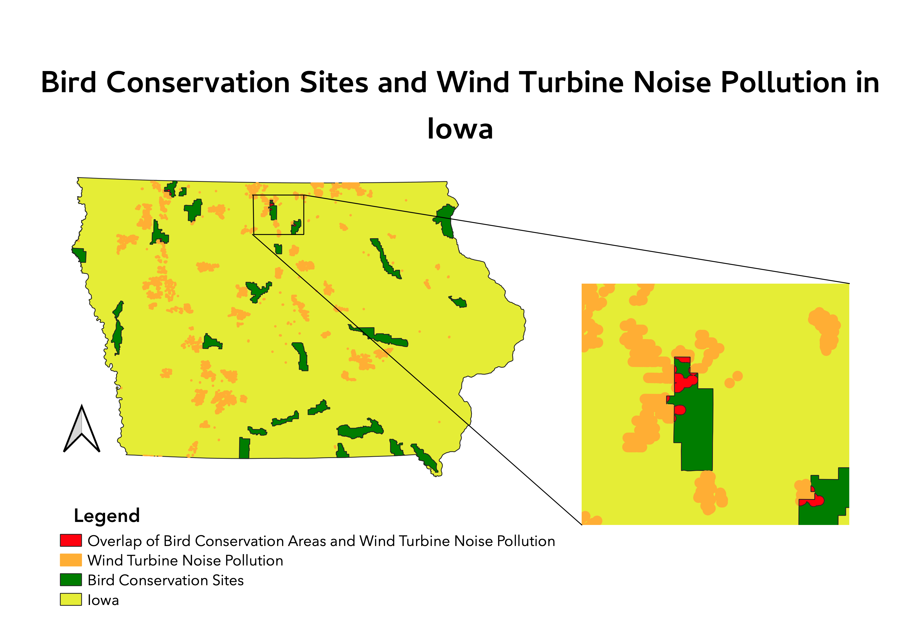
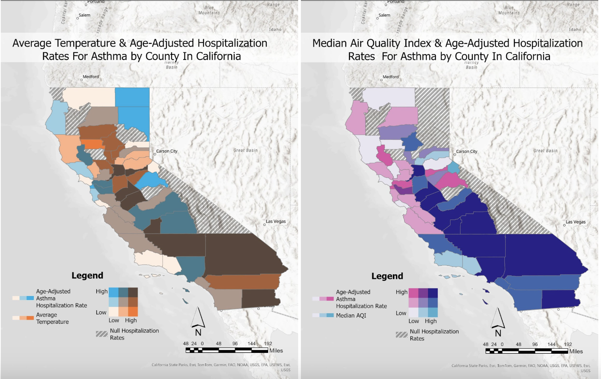
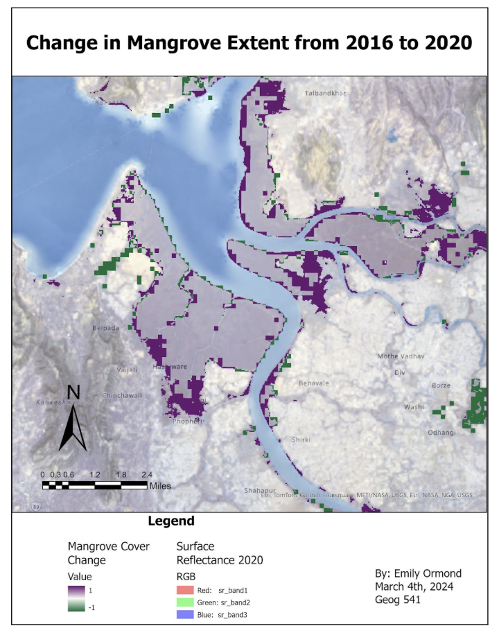
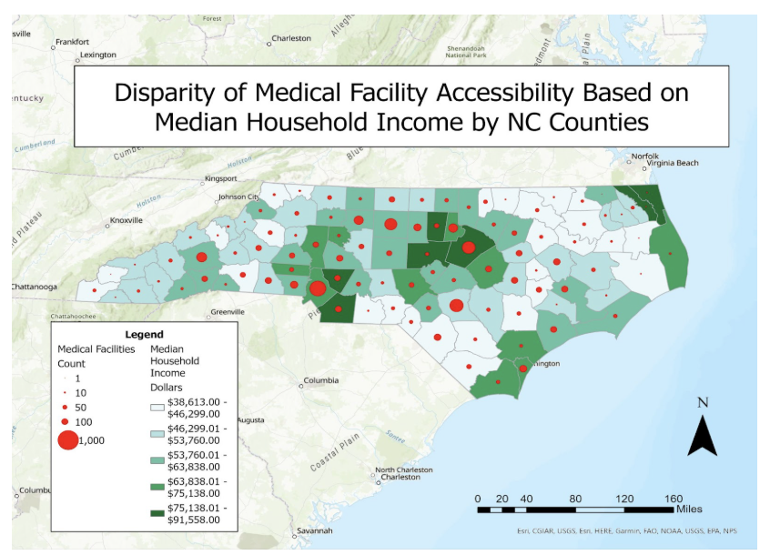

I created this map in QGIS to see where bird conservation sites and wind turbine noise pollution overlap. I created a 1000ft buffer around the wind turbine locations to represent the emitted noise pollution. I then performed an intersect to see where these areas interfered with bird conservation zones. This shows how GIS can be applied to conservation planning by analyzing potential conflicts between renewable energy development and wildlife protection.
I created this map in ArcGIS to investigate the effect of AQI and temperature on Asthma hospitalization rates. I used a bivariate color scheme to reveal where high environmental stressors, like poor AQI and high temperatures, are associated with high asthma hospitalization rates. This shows how GIS can be applied to public health and reveal potential hotspots of health vulnerability.
I created this map in ArcGIS by following a tutorial. I compared 2 different satellite images of mangrove cover, one from 2016 and one from 2020. I applied a custom raster function template provided by the tutorial to change the raster into a binary categorization (1 = mangrove, 0 = no mangrove). I then subtracted the 2020 raster from the 2016 raster to see the change in mangrove cover. This map highlights the loss and gain of mangrove cover and could be used for future conservation.
I created this map in ArcGIS. I first imported data on medical facility locations and performed a spatial join to a NC county geoJSON to see the number of facilities in each county. I then separately created a choropleth of median income by county. I then joined these 2 and changed the symbology to visualize the relationship between medical facility access and median income.
